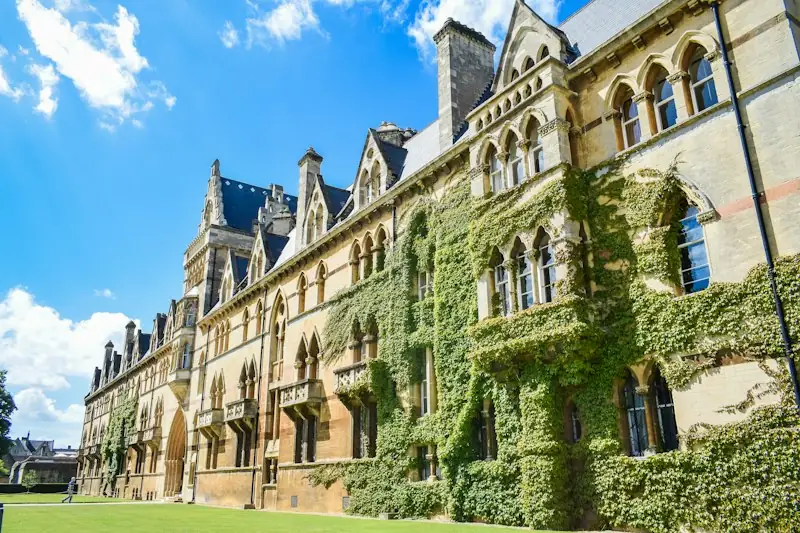

Situated at 14 Wellington Square, Oxford OX1 2JD, United Kingdom, Stackly University Education Portal stands as an internationally celebrated centre for higher learning, scientific inquiry, and civic leadership.
Our tutorial and laboratory methodology empowers students not merely to absorb existing paradigms, but to question assumptions, synthesize knowledge across disciplines, and lead with ethical integrity.
Every lecture, research grant, and community partnership at Stackly University is anchored by three foundational commitments.
To cultivate fearless thinkers and advance frontier research that addresses climate resilience, equitable healthcare, ethical artificial intelligence, and democratic governance worldwide.
To serve as Europe's most connected digital and physical university ecosystem, bridging classic Oxford tutorial mentorship with borderless collaborative laboratories.
Academic freedom, radical inclusivity, empirical rigour, and public stewardship define daily life across our 12 residential colleges and 8 faculties.
From our founding charter in Victorian Oxford to launching the UK's first collegiate quantum-AI supercomputing hub, explore the milestones that shaped Stackly University.

Founded in Oxford with 85 scholars dedicated to natural philosophy, classical literature, and constitutional jurisprudence.
Pioneered early crystallography and molecular pharmacology laboratories in partnership with UK teaching hospitals.
Connected 50+ international partner universities through unified digital libraries, hybrid seminars, and joint doctoral supervision.
Home to 400+ researchers developing clean fusion materials, autonomous medical diagnostics, and sustainable urban policy.
Guided by internationally respected academics, provosts, and public leaders committed to institutional excellence.
Former International Court of Justice Counsel and Chair of the Oxford Higher Education Endowment Trust.
Oversees curriculum quality across 8 schools, faculty tenure appointments, and interdisciplinary honours pathways.
Directs £195M in annual external research grants, technology transfer spinouts, and global industry consortia.
Champions residential college inclusivity, international scholar onboarding, and 24/7 pastoral health services.
Independent audits and international league tables consistently rank Stackly University at the forefront of teaching and research.
99.4/100 score for Academic Reputation and International Faculty Diversity.
Awarded highest UK national distinction for student learning outcomes and academic support.
94% of submitted university research rated "World-Leading" or "Internationally Excellent".
Recognized for UN Sustainable Development Goals contribution and civic engagement.
Our 140-acre Oxford campus harmonizes Grade-I listed limestone architecture with BREEAM-Outstanding scientific hubs.
Housing 2.4 million volumes, medieval folios, and 1,200 climate-controlled individual research carrels with digital archival retrieval.
Equipped with cryo-electron microscopy, genomics sequencing suites, and collaborative translational medicine clinics.
A 950-seat acoustic concert hall, black-box theatre, and Parliamentary debating chamber hosting global heads of state.
We measure institutional success not only by citations and patents, but by our ecological stewardship and socio-economic mobility impact across the United Kingdom and developing nations.
Every undergraduate has the opportunity to spend a semester or summer fellowship at one of our global partner institutions.
Joint laboratory exchanges in Zurich, Munich, Paris, and Stockholm with full ECTS credit transfer and Erasmus+ mobility stipends.
Reciprocal visiting scholar fellowships across Boston, New York, Toronto, and California technology corridors.
Collaborative innovation centres in Singapore, Tokyo, Bengaluru, Sydney, and Seoul focused on AI, biotech, and maritime climate policy.
Visiting professors, school counsellors, and prospective scholars are invited to book a guided tour of 14 Wellington Square, Oxford OX1 2JD, United Kingdom.